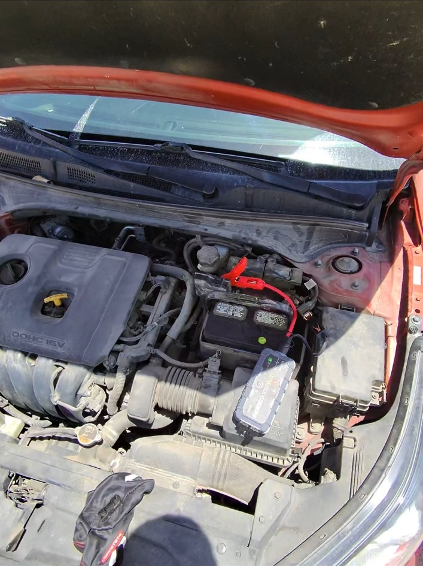

Jump Start & Battery Testing in El Paso, TX
Dead or weak battery? Light It Up Roadside provides mobile jump starts with battery testing included. We come directly to your vehicle throughout El Paso, Texas.

🔋 Dead Battery? We Come To You.
A dead battery can leave you stranded at home, at work, in a parking lot, or on the side of the road. Our mobile jump start service brings the equipment directly to your location.
Instead of simply jump-starting your vehicle, we also test your battery to help you understand its condition and whether a replacement may be needed. Both services are included in our $60 starting price.
What's Included in Our Service?
Jump Start Capabilities
Our professional jump-start equipment is designed to assist a wide range of gasoline and diesel vehicles.
Service depends on vehicle compatibility, battery condition and the cause of the starting problem. Contact us with your vehicle's year, make and model to confirm service.
Why Battery Testing Matters

A successful jump start does not necessarily mean your battery is in good condition. Battery testing helps evaluate whether your battery may be weak, discharged or approaching the end of its useful life.
Common signs of battery trouble include:
- Slow engine cranking.
- Clicking when attempting to start.
- Repeatedly needing a jump start.
- Dim lights or electrical problems.
- Difficulty starting after the vehicle has been parked.
These symptoms can also be caused by other vehicle components. Battery testing is not a complete mechanical or electrical diagnosis.
What If Your Battery Needs Replacement?
If testing indicates that your battery may need replacement, Light It Up Roadside also offers mobile battery installation as a separate service.
Battery installation labor starts at $80. Customers must purchase and provide a compatible replacement battery. The battery itself is not included.
🔧 View Battery Installation Service →Frequently Asked Questions
How much does a jump start cost in El Paso?
Our mobile jump start service starts at $60 and includes battery testing. Final pricing may vary depending on location, time of service and vehicle requirements. We confirm your quote before dispatch.
Is battery testing included in the jump start price?
Yes. Our combined jump start and battery testing service starts at $60. On-site battery testing is included.
Do you offer 24-hour jump start service in El Paso?
Yes. Light It Up Roadside offers 24/7 emergency jump start assistance throughout El Paso, subject to availability.
Can you jump-start diesel trucks?
Yes. Our equipment can assist compatible diesel engines up to 8 liters and gasoline engines up to 10 liters. Contact us with your vehicle information to confirm service.
Can you jump-start my vehicle at home or work?
Yes. We provide mobile assistance at homes, workplaces, parking lots and safe, accessible roadside locations throughout El Paso.
How long does it take for roadside assistance to arrive?
Typical arrival is 20–40 minutes when available. Actual arrival times depend on your location, traffic and current service requests.
How do I know if my battery needs replacement?
Slow cranking, repeated jump starts and difficulty starting can indicate battery problems. Our battery testing service helps evaluate its condition.
What if my vehicle still will not start?
A vehicle that will not start may have a battery, starter, alternator or other mechanical or electrical issue. A jump start cannot repair every starting problem.
Do you install replacement car batteries?
Yes. Mobile battery installation is available separately, starting at $80 for labor. You must purchase and provide a compatible replacement battery.
What information do you need before dispatch?
Please provide your exact location, vehicle year, make and model, and a description of what happens when you attempt to start your vehicle.
How do I request a jump start near me?
If you are in El Paso, Texas, call or text Light It Up Roadside at (915) 247-2969. We will confirm availability, pricing and an estimated arrival time.
Local Mobile Roadside Assistance
Light It Up Roadside is a locally operated roadside assistance business serving El Paso, Texas. We focus on clear communication, upfront quotes and convenient mobile service.
★ View Our Google Reviews →More Roadside Services in El Paso
Need a Jump Start Right Now?
Jump Start & Battery Testing Starting at $60
Call Light It Up Roadside for mobile assistance in El Paso, Texas.
📞 (915) 247-2969